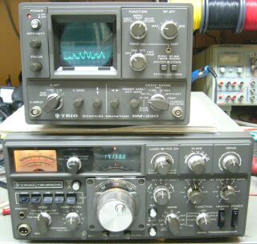
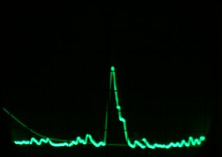
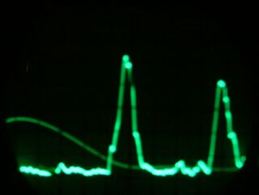

 |
シャックに置いて格好の良いＴｗｏ Ｔｏｎｅオシレータが欲しくて、表示をしなくなったというＳＭ-２２０を手に入れました
この機械では良くある、高圧系のトラブルが発生したもののようです
１台実用しているものがあり、様子は分かっていますので、すぐに修理に手をつけました
古い部品が入手しずらくなった昨今です
部品入手に手間取りましたが、きちんと表示をするようになりました
中を開けて気付いたことなのですが、ＢＳ-８バンドスコープ・オプションが搭載してありました
この発見が「こと」の始まり・・・槌より柄のほうが重たいお話の始まりです
費用と時間を使ったわけは、単にＢＳ-８の表示が見たかっただけ、です（折角入っているものですから、どんなものか見てみたい！）
|
ＢＳ-８をちゃんと働かそうとしたら、ＴＳ-８２０が必要です（８８３０ＫＨｚ付近のＩＦであれば別のものでも良いですが・・・）
仕方がないので、送受できない（周波数表示をしない）ジャンク、というＴＳ-８２０Ｓを入手しました
IF以降は動作していましたが、ＶＦＯ動作せず、カウンタ表示もしない、全く送受しないものでした
古い時代のものですから、接触不良からチェックが始まる世界です
前オーナーか修理依頼をした先かは分かりませんが、ＰＬＬユニット、そしてカウンタユニットは特に凄い半田盛りがしてありました
ＷＥＢ上などに、この手のトラブル（ＴＳ-８２０で送受ＮＧ、カウンタ不具合）の原因の多くは接触不良、この場合は半田付けのやり直しで解決したとかいう情報が多くあるのでしょう
実際は、外部ＶＦＯ接続コネクタ（現状はショート配線のみ）に接触不良、ＰＬＬユニットからの配線引き出し部に接触不良、ＶＦＯレベル低下ほかによるＰＬＬ Ｌｏｃｋ外れが見られました
ここまでの修理で一応の送受信とカウンタ表示はするようになりましたが、ドライブ不足？（各バンドでパワーがまちまち）、そしてカウンタが８→０、９→１という非常に読みづらい表示をしてくれます
ＢＣＤ先頭ビット「１」が立たない状態のようです（常に「０」）
この頃のカウンタは、ＴＴＬ-ＩＣでの構成、古いＴＴＬ-ＩＣを探さないといけない羽目になりました
怪しいとにらんだＩＣは、探しても入手できないＬＳタイプでしたので、仕方なく通常タイプに置き換えました（念のためＩＣソケットを採用！）
折角ここまで直したのだからと、ＲＦ、ＩＦトラッキング、ファイナル中和と一通りの調整を行い、スペックどおりの動作をするまでに至りました（おきまりのお掃除も実施、真空管ほかの交換は不要でした）
本機で運用するつもりは、全くないのですが・・・
Ｓメータは、今風に３０ｄｂμＶで、Ｓ９表示・・・少し甘い？指示に調整してみました
さあ、ここからが本番
バンドスコープ用出力の追加・・・ＢＳ-８用に必要な改造をしました（最初から付いているＩＦ出力端子も、ＳＭ-２２０取説の指示どおり、レベル調整用に抵抗を入れました）
ジャンク箱の中ほかを、必死でＧＴプラグを探しました！
余談ながら、ＢＳ-８についても、調整は必要でした（帯域幅、センター周波数 センター周波数については、結構シビアです） |
 |
見てみたかったバンドスコープ表示です
巾±２０ＫＨｚ １４ＭＨｚ帯での実稼働
ひとつの信号（ＳＳＢ）を受信した様子です |
 |
こちらは近接の信号があるケースです（いずれもＳＳＢ）
巾±２０ＫＨｚ １４ＭＨｚ帯での実稼働です
最近のスペアナ機能付きという無線機の表示解像度には及びませんが、それなりに様子を見ることが出来ます
表示可能スキャン巾については、±２０ＫＨｚ巾と±１００ＫＨｚ巾しか選択できません（そのバンドを端から端まで一発表示と言うことは、出来ません） |
| 入手したステーションモニタ ＳＭ-２２０ に、たまたまバンドスコープ・オプション ＢＳ-８ が装着されていたために、使う当てもないのに余分な費用と時間を使ってしまったという、私にはよくある「槌より柄のほうが重たかったお話」でした |
|
| 「槌より・・・」 岡山限定のことわざ？？ だとしても、意味はお分かりですね |
| |
2016.09 ＪＡ４ＦＵＱ |